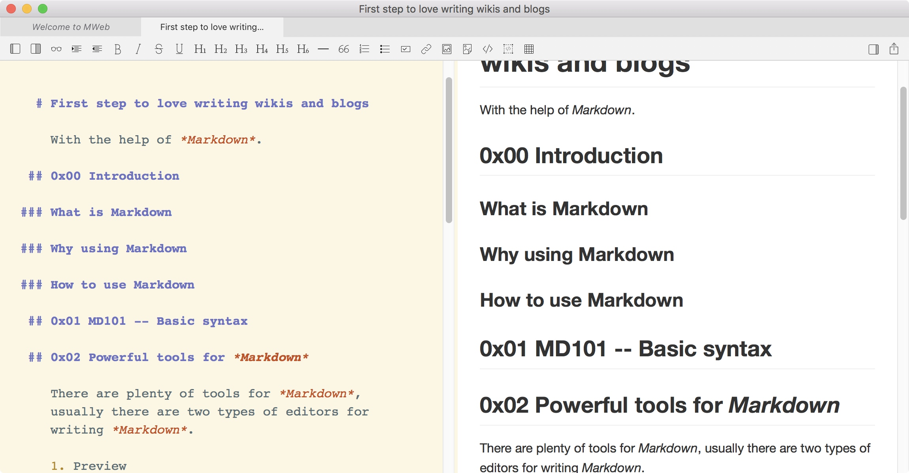
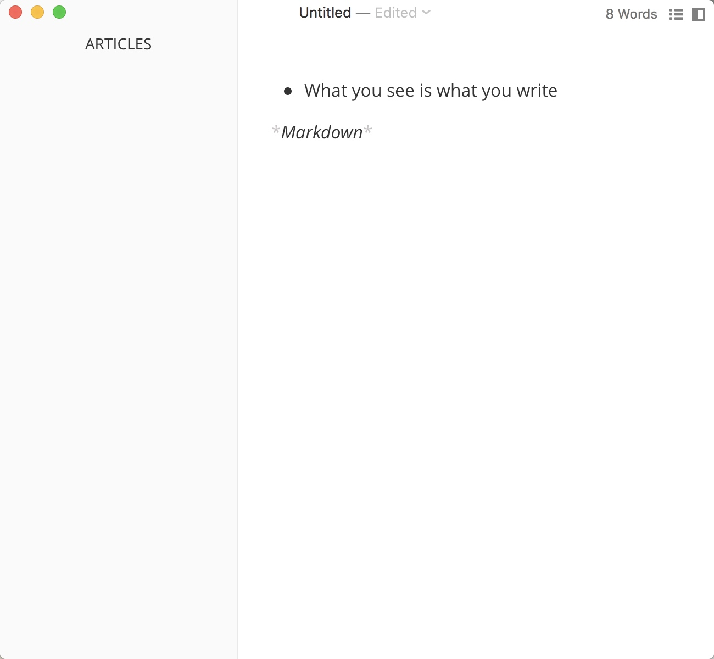

With the power of Markdown.
0x00 Introduction to Markdown
What is Markdown
Markdown is a simple but yet powerful Markup Language, it's more like a simpler version of HTML, and in fact, it sure be able to transform into HTML.
And almost all HTML tags are supported in Markdown. Some extensions also help Markdown to become a powerful note taking and blogging tool.
Why using Markdown
There are serval reasons for you to fall in love with Markdown.
- Simple
- Expressive
- Beautiful and optional themes(Make a theme by yourself)
How to use Markdown
- Make your decision to use Markdown -- Motivation
- Choose a editor -- Tool
- Start writing -- Just do IT!
0x01 MD101 -- Basic syntax
Markdown is Simple, with a few symbols, you can have a styled documents.
Let's start with some examples.
Titles
First, let's create a Title, like titles in HTML, there are serval levels of title in Markdown.
From h1 to h6 in HTML, markdown use # to represent titles.
# H1 Title
## H2 Title
### H3 Title
.
.
.
Easy, right?
What if I want to create a list? With or without sequences.
Lists
<!-- Ordered List -->
1.
1. Banana
1. Cherry
<!-- Un-Ordered List -->
* Java
* Ruby
* Python
-
- Banana
- Cheery
- Java
- Ruby
- Python
And tables are also supported.
Tables
Title|Description|Comments
---|---|---
| Red| Love it!|
Banana| Yellow| Delicious|
| Title | Description | Comments |
|---|---|---|
| | Red | Love it! |
| Banana | Yellow | Delicious |
You can write it all by hands or some tools may also support quick actions.
Links and images
You might have already known that a <a> tag can support hyper links in HTML.
In Markdown, it's even simpler. Just use like this.
[Descriptions](urls)
For example:
[Google](https://google.com)
It will look like this: Google
Images are the same. Just add a ! in the front of the links.

Local images are also supported, just use absolute path or relative path instead of URL.
For example:


Comments/Strong/Underline/Block quote/Codes/Highlights
Comments are like comments in codes, they just exist in plain markdown files, will not show in previews.
Strong will make text in Strong mode.
Strong text
Underline will add a underline in texts
underline texts
Strike Through
Strike texts
Inline codes
Inline codes
int a = 1;
Code blocks
int a = 0;
Block Quotes
Quote texts
Another line
Sequence diagrams(Not for all)
Some editors are also support LaTex and flow charts. Also simple to use and powerful.
Andrew->China: Says Hello
Note right of China: China thinks about it
China-->Andrew: How are you?
Andrew->>China: I am good thanks!
st=>start: Start:>http://www.google.com[blank]
e=>end:>http://www.google.com
op1=>operation: My Operation
sub1=>subroutine: My Subroutine
cond=>condition: Yes
or No?:>http://www.google.com
io=>inputoutput: catch something...
st->op1->cond
cond(yes)->io->e
cond(no)->sub1(right)->op1
Tasks
Tasks list
- [ ] task one not finish `- + SPACE + [ ]`
- [x] task two finished `- + SPACE + [x]`
[] task one not finish
task two finished
MathJax(Math LaTeX support)(Not for all)
For example this is a Block level \[x = {-b \pm \sqrt{b^2-4ac} \over 2a}\] formula, and this is an inline Level \(x = {-b \pm \sqrt{b^2-4ac} \over 2a}\) formula.
\[ \frac{1}{\Bigl(\sqrt{\phi \sqrt{5}}-\phi\Bigr) e^{\frac25 \pi}} =
1+\frac{e^{-2\pi}} {1+\frac{e^{-4\pi}} {1+\frac{e^{-6\pi}}
{1+\frac{e^{-8\pi}} {1+\ldots} } } } \]
0x02 Powerful tools for Markdown
There are plenty of tools for Markdown, usually there are two types of editors for writing Markdown.
Preview
MWeb, MacDown, SimpleNote, VSCode, Atom etc..

See what you write
Typora, Bear etc...

0x03 Publishing your wikis and blogs
Since Markdown can be converted to HTML easily, so all you need is a tool that can help you do this convert job.
When I publish my notes on Wiki, my step is:
- Write in MWeb(Copy paste images are easy)
- Convert markdown in VSCode(With preview extension)
- Copy paste VSCode preview into wiki editor, and upload images.
GitHub Pages
GitHub Pages is a simple and free way to host your static website in HTML, the official support tool is Jekyll, it's also easy to use.
Other un-official tools like:
Generate static files in local, just push to your GitHub repo, and all will be host in GitHub pages service.
The default domain for your pages is username.github.io, you can also add your custom domain to this repo, so you can visit your pages via your domain like https://blog.crayygy.com. HTTPS support over custom domain has been added recently.
0x04 Something more
Code review practice
We have a force rule for code review, that all review must have at least two other reviewers' approval and add code review mailer as observer. And all commit must after code review commit.
This is good for us to keep a robust code base. But sometimes code reviews are annoying, a bunch of files and codes, you even cannot find where to start reviewing without author's explanation. Authors are always need to explain once or even twice for the same codes. The worst thing is, after a few months, if you find there is a bug/or worse (bugs) insides these codes, you have to read the code review again. It's hard to find useful information without author's help. This is all because we just start a code review without explanation in documents.
We developers might have something in faith that The best comments are codes. But in code reviews, if you just leave codes there without comments, you might forget why you change conditions after months yourself.
Last time I attends Windows team's tools sharing meeting, and I found their practice for code reviews are what we can learn and follow.
I think these rules are useful for code reviews:
Some from others and some are what I follow and find it useful.
Common rules for code commits:
- All commits must have code review, even simple codes or change strings.
- All files must be commit after code review completed.
- Commit files must be the same with code review files. Nothing more, nothing left.
Rules for code reviews:
- Two reviewer and mailer observer
- Add overview as a short introduction of your changes, CDETS bug fix(CDETS ID)\PRT fix(PRT link)\User story(US link), Root causes, behavior changes and more.
- Add comments at important lines and methods, this is helpful when others read your review and have a better understating of why you do this in that way.
- Big changes are supposed to split into serval small reviews and commits to make it simple and easy to recover.